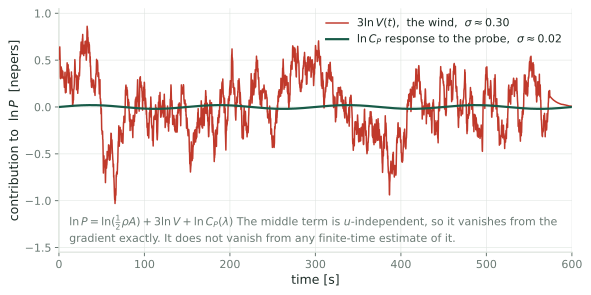
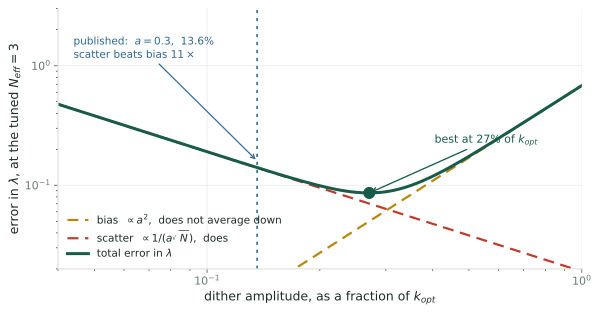

Where Does the Torque Gain Converge?
Every published run lands a few percent below the design value, and the two obvious explanations do not account for it
What is actually being adapted
The controller has one knob: the torque gain \(k\) in \(\tau_g = k\Omega^2\). Everything else follows from it. Setting \(\dot\Omega = 0\) gave
\[\frac{C_P(\lambda)}{\lambda^3} = \frac{2k}{\rho\pi R^5}\]
so choosing \(k\) chooses the tip-speed ratio \(\lambda_{\text{eq}}(k)\) the rotor settles at. Extremum seeking estimates \(\partial \ln P/\partial k\) and integrates until that estimate is zero.
So the quantity that converges is \(k\). The tip-speed ratio is not adjusted, estimated, or held. It is what you read off afterward, through the monotone map \(k \mapsto \lambda_{\text{eq}}\).
Worth being firm about this, because CLR19 reports lambda-bar and it is easy to read that as the thing being controlled. It is not. Lambda is a state. The algorithm never forms it, because forming it would need the wind speed, which is the whole reason extremum seeking is being used.
What it is scored against
The reference value comes from the design power-coefficient curve:
\[k_{\text{opt}} = \tfrac12\rho\pi R^5\,\frac{C_P^{\max}}{\lambda_\star^3} \;=\; 2.2, \qquad\text{from}\quad C_P^{\max} = 0.49,\ \ \lambda_\star = 7.5\]
Where that curve comes from
Blade-element momentum: chop each blade into spanwise strips, look up the lift and drag of the airfoil at each strip’s angle of attack, and integrate. That gives \(C_P(\lambda,\beta)\) for the NREL 5 MW reference rotor.
What that makes it
A prediction from blade geometry and airfoil tables, in steady uniform flow. Not a measurement of the rotor in the simulation.
So \(k_{\text{opt}} = 2.2\) inherits whatever that curve gets wrong. If its peak sits at the wrong \(\lambda\), the reference is wrong and every convergence claim is scored against the wrong number.
The anomaly

Every converged torque gain in the large-eddy simulations of [CLR19] sits below the design value, and every tip-speed ratio sits above it. Two algorithms, three wind speeds, two inflow conditions, and the sign never changes.
This is not a criticism of CLR19. The offsets are small enough to read as agreement, and nothing in it depends on them. They become interesting only once you want to resolve 0.2 in lambda.
Six runs, two independent algorithms, sign never flips. That is bias, not scatter.
Why the wind does not cancel
One dither period produces one number, a correlation:
\[\hat g \;=\; \frac{1}{aT}\int_0^T \ln P(t)\,g(t)\,dt, \qquad \ln P = \underbrace{\ln(\tfrac12\rho A)}_{\text{constant}} + \underbrace{3\ln V(t)}_{\text{the wind}} + \underbrace{\ln C_P(\lambda)}_{\text{the turbine}}\]
the constant does cancel
\(\int_0^T g\,dt = 0\) by symmetry, so a constant contributes exactly nothing.
the wind does not
\(3\ln V(t)\) is not a constant. What survives is \(\tfrac{3}{aT}\int_0^T \ln V\,g\;dt\), which is zero in expectation and nonzero in any one window.
Flip a fair coin ten times: heads minus tails has expectation zero, and you still get \(+2\) or \(-4\). Over 150 s the turbulence leans one way or the other against the square wave by chance. The wind does not bias the gradient. It adds scatter.
And the scatter is large

In the raw record the irrelevant term is about fifteen times the signal: \(3\ln V\) has \(\sigma \approx 3\,\mathrm{TI} = 0.30\) nepers, against a probe response near \(0.02\).
Correlating against the dither over a window of length T shrinks that by roughly the square root of the correlation time over T, giving
sigma of g-hat, about 3 times TI times root tau-c over T, divided by a.
It falls as one over root T, which is exactly the averaging Rotea says is unavoidable, and as one over the dither amplitude. Neither ever drives it to zero.
So which \(k\) should it find?
(a) the design \(k\)
\(k_{\text{opt}} = 2.2\), the gain that peaks the blade-element curve in steady uniform flow. What every paper scores against.
(b) the turbulent \(k\)
The gain maximizing \(\mathbb{E}[\ln P]\) under the inflow the machine actually sees. Differs from (a) by a Jensen gap plus rotor lag.
(c) the algorithm’s fixed point
The gain where the gradient estimate vanishes, which adds whatever bias the demodulator carries.
Three different numbers. The runs all land near \(2.03\). Asking “how accurate is the estimator” is premature until we say which of these it was supposed to hit.
And note the reporting convention. The papers quote lambda-bar rather than k-bar, because lambda is the interpretable coordinate. But the two are the same fact: a torque gain 7.7 percent below design puts the rotor at a tip-speed ratio about 0.19 above design, and that is most of the 0.35 offset in the figures.
Candidate one: estimator bias
[CLR19] dithers with a square wave, so the correlation is a two-point central difference. The slides that follow derive \(\hat g = J' + \tfrac{a^2}{6}J''' + O(a^4)\) and the displacement \(\Delta u = -\tfrac{a^2}{6}\,J'''/J''\) it leaves; the numbers are below.
Every term is computable: invert \(\varphi(\lambda) = C_P(\lambda)/\lambda^3 = c\,u\) for \(\lambda_{\text{eq}}(u)\), with \(c\) pinned by \(\varphi(\lambda_\star) = c\,u_{\text{opt}}\); form \(J(u) = \ln C_P(\lambda_{\text{eq}}(u))\) and differentiate at the peak. Units below are Ciri et al.’s, \(u_{\text{opt}} = 2.2\) N\(\cdot\)m\(\cdot\)rpm\(^{-2}\).
read off the curve
| \(J''\) | \(-0.145\) |
| \(J'''\) | \(0.108\) |
| ratio | \(-0.748\) |
| \(d\lambda/du\) | \(-1.13\) \(\;(=-\lambda_\star/3u_{\text{opt}})\) |
| \(a\) (Ciri 2019) | \(13.6\%\) of \(k_{\text{opt}}\) |
the result
\[\Delta u = +0.0112\]
\[\Delta\lambda = \Delta u\cdot\frac{d\lambda}{du} = -0.013\]
Against an observed \(+0.35\), and with the wrong sign.
Candidate two: the peak moved
Rotor inertia is \(3.5\times10^7\) kg m², so \(\lambda\) swings rather than sits. Expanding \(\mathbb{E}[C_P(\bar\lambda+\delta)] \approx C_P + \tfrac12\sigma_\lambda^2 C_P''\) and maximizing over \(\bar\lambda\),
\[\Delta\lambda \;=\; -\frac{\sigma_\lambda^2}{2}\,\frac{C_P'''}{C_P''}, \qquad C_P'' = -0.0551,\quad C_P''' = 0.0065\]
| \(\sigma_\lambda\) | \(0.3\) | \(0.5\) | \(0.8\) |
|---|---|---|---|
| \(\Delta\lambda\) | \(+0.005\) | \(+0.015\) | \(+0.037\) |
Same shape as candidate one, a third derivative over a second scaled by a variance, but opposite in meaning: one says the algorithm misses a fixed target, the other says the target moved. Note \(\sigma_\lambda\) is estimated, from the share of turbulence energy above the rotor’s own pole, not measured.
The arithmetic

Both fail, by more than an order of magnitude. Adding a third effect, that the reported \(\bar\lambda\) is a time average and \(\lambda(u)\) is curved, brings the total to \(0.042\) against an observed \(0.350\).
Computed on the map from normalized torque gain to settled tip-speed ratio, using the dither amplitude [CLR19] actually used (Appendix A2, \(a = 0.3\)).
The honest caveat, and it should be said out loud: the third derivative comes from an analytic surface fitted through the peak, not from the NREL tables. So quote the sensitivity rather than the number. To explain the whole gap by finite-difference bias you would need that third derivative about 28 times larger. A fitted surface can be wrong by a factor of two or three. Not by 28.
Costing it out
Where the \(a^2/6\), the \(-1/3\) and the amplitude trade actually come from.
Splitting the objective
\(C_P\) is naturally a function of \(\lambda\), but \(\lambda\) is not settable. You turn the gain \(u\), and \(\lambda\) follows through \(\lambda_{\text{eq}}(u)\). So split \(\ln P\) into the part that moves with \(u\) and the part that does not:
\[\ln P(t) \;=\; \underbrace{\ln(\tfrac12\rho A) + 3\ln V(t)}_{C(t),\ \text{no } u \text{ in it}} \;+\; \underbrace{\ln C_P\big(\lambda_{\text{eq}}(u)\big)}_{J(u)}\]
A term with no \(u\) in it has zero derivative in \(u\), so
\[\frac{\partial^n(\ln P)}{\partial u^n} = \frac{\partial^n J}{\partial u^n} \qquad\text{for every } n\ge 1\]
\(\ln P\) needs the wind and cannot be evaluated; \(J\) needs only the \(C_P\) curve. They have identical derivatives, so derivatives may be taken on \(J\) alone. That is not the same as saying \(C\) disappears from the estimator.
What the estimator actually returns
The 2019 dither is a square wave: the knob sits at \(u+a\) for the first half-period, \(u-a\) for the second. The correlation is a difference of two half-period means, \(\hat g = \big[\bar y(u{+}a) - \bar y(u{-}a)\big]/2a\). Substituting the split:
\[\hat g \;=\; \underbrace{\frac{J(u{+}a) - J(u{-}a)}{2a}}_{\text{the turbine}} \;+\; \underbrace{\frac{\bar C^{+} - \bar C^{-}}{2a}}_{\text{the wind}}\]
\(\bar C^{\pm}\) are means of the same \(C(t)\) over different windows, so they do not cancel. This is the coin-flip term: zero mean, nonzero variance. It is where all the scatter comes from, and it is not part of any Taylor series.
Bias from the first term, scatter from the second. The next slides take them in turn.
Why the bias is \(a^2/6\)
Taylor-expand the turbine term about \(u\):
\[J(u+a) = J + aJ' + \tfrac{a^2}{2}J'' + \tfrac{a^3}{6}J''' + \tfrac{a^4}{24}J'''' + \cdots\] \[J(u-a) = J - aJ' + \tfrac{a^2}{2}J'' - \tfrac{a^3}{6}J''' + \tfrac{a^4}{24}J'''' - \cdots\]
Subtracting, every even power cancels, which is what “central” difference means. Then divide by \(2a\): every term drops one order, \(O(a^5)\) included.
\[J(u{+}a) - J(u{-}a) = 2aJ' + \tfrac{a^3}{3}J''' + O(a^5) \;\;\Longrightarrow\;\; \frac{J(u{+}a) - J(u{-}a)}{2a} = J' + \frac{a^2}{6}J''' + O(a^4)\]
That is the turbine term alone. Adding back the wind term from the previous slide gives the whole estimator:
\[\hat g \;=\; J' + \frac{a^2}{6}J''' + O(a^4) \;+\; \underbrace{\frac{\bar C^{+} - \bar C^{-}}{2a}}_{\text{the wind}}\]
The algorithm stops where \(\hat g = 0\), not where \(J' = 0\). Linearizing \(J' \approx J''\Delta u\) gives \(\Delta u = -\tfrac{a^2}{6}\,J'''/J''\).
The leading error is a-squared rather than a because the even terms cancel. A one-sided difference would be order a and far worse.
And the bias is not an artifact of the square wave. Sinusoidal dithering, as in Kumar and Rotea 2022, expands J of u plus a sine and demodulates against a sine, picking up the fourth moment of a sine, three eighths, and gives a-squared over eight instead of over six. Same order, different constant.
From a gain error to a tip-speed ratio
The bias lives in \(u\), the torque gain the algorithm turns; Ciri et al. report \(\lambda\). The equilibrium relation converts between them. With \(\varphi(\lambda) := C_P(\lambda)/\lambda^3\) it reads \(\varphi(\lambda_{\text{eq}}) = c\,u\), where \(c\) is a rotor constant that also carries whatever units \(u\) is quoted in. Differentiate implicitly:
\[\varphi'(\lambda)\,\frac{d\lambda}{du} = c \qquad\Longrightarrow\qquad \frac{d\lambda}{du} = \frac{c}{\varphi'(\lambda)}\]
You never have to evaluate \(c\): the optimum pins it, \(c = \varphi(\lambda_\star)/u_{\text{opt}}\). And at the peak \(C_P' = 0\), so \(\varphi'(\lambda_\star) = -3C_P^{\max}/\lambda_\star^4\). Everything cancels:
\[\frac{d\lambda}{du}\bigg|_\star = \frac{C_P^{\max}\big/(\lambda_\star^3\,u_{\text{opt}})}{-3C_P^{\max}\big/\lambda_\star^4} = -\frac{\lambda_\star}{3\,u_{\text{opt}}} \qquad\Longleftrightarrow\qquad \frac{d\ln\lambda}{d\ln u}\bigg|_\star = -\frac13\]
Negative: more braking torque, slower rotor, lower \(\lambda\). And the leverage is exactly \(-1/3\) in elastic terms, free of \(c\), \(\rho\), \(R\), the gearbox and the choice of units. With Ciri et al.’s \(u_{\text{opt}} = 2.2\) N\(\cdot\)m\(\cdot\)rpm\(^{-2}\) that is \(d\lambda/du = -1.14\).
Where the one third comes from: at the peak C_P is flat, so near it phi is essentially C_P-max over lambda cubed. The equilibrium then says u goes like lambda to the minus three, and inverting a cube root is where the third comes from. Nothing about the blades enters.
This is also why quoting a slope in absolute units is a trap. Minus 1.14 per newton-meter-per-rpm-squared sounds small and minus 39.8 would sound large, but they are the same physical statement in two unit systems. The elasticity is the number that means something.
Linearizing is safe here. At the predicted bias, half a percent in u, linear and exact agree to three decimals at minus 0.012. At the observed anomaly, 7.7 per cent, linear gives 0.191 and exact 0.196.
And the sign is the point. The anomaly has the gain landing low, so lambda high. The bias predicts delta-u positive, gain high, lambda low. Opposite sign. That conclusion survives any error in the magnitude.
Sizing the scatter
The wind term is \((\bar C^{+} - \bar C^{-})/2a\). Let \(\sigma_y\) be the standard deviation of the fluctuating part of \(y = \ln P\), and let \(\tau_c\) be its correlation time: the lag beyond which the signal has forgotten itself, so a window of length \(T_w\) carries about \(T_w/\tau_c\) independent samples rather than \(T_w/\Delta t\). Each half-period average has \(T_w = T/2\):
\[\operatorname{Var}(\bar C^{\pm}) = \frac{\sigma_y^2}{\underbrace{(T/2)/\tau_c}_{\text{independent samples}}} = \frac{2\sigma_y^2\tau_c}{T}\]
The two windows are disjoint, so treat them as independent and add variances. Then divide by \(2a\):
\[\operatorname{Var}(\hat g_{\text{noise}}) = \frac{1}{4a^2}\cdot\frac{4\sigma_y^2\tau_c}{T} \;\;\Longrightarrow\;\; \boxed{\;\sigma_{\hat g} = \frac{\sigma_y}{a}\sqrt{\frac{\tau_c}{T}}\;}\]
The \(1/a\) is the whole difficulty: the wind does not care how hard you dither, so shrinking the probe to kill bias amplifies the noise one for one. The \(\sqrt{\tau_c/T}\) is weaker than it looks, and only holds for \(\tau_c \ll T/2\), which this turbine does not satisfy.
Sigma-y: log-power is a constant plus three log V plus J, so its fluctuation is three times delta-V over V, three times the turbulence intensity. At ten per cent that is 0.30 nepers. It is an upper bound, because the rotor averages over the whole disk and its own inertia filters, so rotor-effective wind is smoother than a point measurement. Tau-c gets its own slide next.
Choosing \(\tau_c\)
Taylor’s frozen-turbulence picture: eddies of size \(L\) sweep past at \(U\), so the signal decorrelates in \(\tau_{\text{int}} = L/U\). IEC 61400-1 fixes \(L\) from hub height [IEC]: \(\Lambda_1 = 0.7\min(z,60)\) m, \(L = 8.1\Lambda_1\). At \(h = 90\) m \(\ge 60\) m the scale parameter is \(\Lambda_1 = 42\) m and the longitudinal integral length is \(L = 8.1\Lambda_1\):
\[L = 8.1(42) = 340\ \text{m} \;\;\Longrightarrow\;\; \tau_{\text{int}} = \frac{340}{8} = 42.5\ \text{s} \;\;\Longrightarrow\;\; \tau_c = 2\tau_{\text{int}} = 85\ \text{s}\]
The factor of two is the convention: independent samples sit \(2\tau_{\text{int}}\) apart, not \(\tau_{\text{int}}\).
\(\tau_c = 85\) s exceeds the half-period \(T/2 = 75\) s, so \(\sigma_{\hat g}\) is outside the regime it was derived in. Wind slower than \(T\) is common to both half-windows and cancels in their difference, so the formula over-states the scatter: exactly, by \(1.5\times\) at \(\tau_{\text{int}} = 42.5\) s and \(2.4\times\) at \(85\) s.
\(L\) is a design standard, not a measurement of this inflow, so \(\tau_c\) is good to a factor of two. That costs \(12\%\) in the answer, since \(a_\star \propto \tau_c^{1/6}\).
Sanity check against the simulation domain of Ciri, Leonardi and Rotea. Their Appendix A1 of [CLR19] gives a precursor box of 9.6 rotor diameters streamwise, 1210 meters, which caps the largest eddy it can hold; at eight meters per second that is a 151-second flow-through. So 340 meters is comfortably inside what the box can represent, and the IEC number is not contradicted by the simulation setup.
The exponents are what make this reportable. Tau-c enters the scatter as a square root and the optimal amplitude as a sixth root, so a scale estimate is enough where a measurement would be needed if it entered linearly.
How big should the dither be?
Bias, from the previous slides, converted to \(\lambda\):
\[|\Delta\lambda| = \underbrace{\tfrac16\left|\tfrac{J'''}{J''}\right|\left|\tfrac{d\lambda}{du}\right|}_{K_b}\,a^2 = \tfrac16(0.748)(1.13)\,a^2 = 0.141\,a^2 \;\;\longrightarrow\;\; 0.68\,\alpha^2\]
Scatter. One period gives gradient noise \(\sigma_y\sqrt{\tau_c/T}/a\); a gradient error displaces the settled gain by \(\delta g/|J''|\); \(N\) periods average it down:
\[\sigma_\lambda = \underbrace{\frac{\sigma_y\sqrt{\tau_c/T}}{|J''|}\left|\tfrac{d\lambda}{du}\right|}_{K_v}\,\frac{1}{a\sqrt N} \;\;\longrightarrow\;\; \frac{K_v/u_{\text{opt}}}{\alpha\sqrt N}\]
Writing \(a = \alpha\,u_{\text{opt}}\) puts both in the units the figure plots: \(\alpha\) is the dither as a fraction of the optimal gain. \(K_b\) follows from the \(C_P\) curve alone. \(K_v\) does not, and the next slide is why.
\(K_b\) carries no \(N\); \(K_v\) does. Bias survives averaging, scatter does not.
Inputs, all in the units of Ciri et al. 2019 where u-opt is 2.2: J-triple-prime over J-double-prime is minus 0.748 and d-lambda-d-u is minus 1.13, both from the fitted surface. Sigma-y is three times turbulence intensity, 0.30 nepers. Tau-c 85 seconds from the previous slide, T the 150-second period, J-double-prime 0.145.
The alpha forms are the ones to trust. Rescaling u multiplies K-b and K-v by compensating powers, so the alpha-form coefficients are the same whatever units anyone quotes the gain in. K-b over u-opt squared is 0.68 from the curve; K-v over u-opt is at most 0.033 from the data.
\(K_v\) has to be calibrated, not predicted
Feeding \(\sigma_y = 3\,\text{TI} = 0.30\) and \(\tau_c = 85\) s into \(\sigma_{\hat g}\) gives \(K_v/u_{\text{opt}} = 0.80\), hence \(\sigma_\lambda = 3.4\) at their dither. The rotor would wander the whole curve. The converged tip-speed ratios reported in [CLR19] say otherwise:
| converged \(\bar\lambda\) | \(U=4\) | \(U=8\) | \(U=12\) | spread |
|---|---|---|---|---|
| [CLR19] Table 4, shear \(+\) \(10\%\) TI | 7.72, 7.75 | 7.85, 7.85 | 7.85 | \(0.13\) |
| [CLR19] Table 3, uniform inflow | 7.60, 7.60 | 7.75, 7.73 | 7.70 | \(0.15\) |
Each cell is ESC then LP-ESC; at \(U=12\) only LP-ESC is listed, because plain ESC did not converge there.
Turbulence adds nothing to the spread of the converged means. The 40-minute mean covers \(\approx 2\) independent realizations, so \(\sigma_\lambda \lesssim 0.14\) and \(K_v/u_{\text{opt}} \lesssim 0.033\): the prediction is too big by \(\mathbf{24}\) to \(\mathbf{40\times}\).
The demodulator rejects far more of the wind than \(\sigma_y\sqrt{\tau_c/T}\) allows for, because that form counts the whole spectrum while the correlation sees a narrow band at \(1/T\), sited in a spectral valley on purpose. Quantifying that rejection is the open problem, and until it is done \(K_v\) is an upper bound read off the data.
Both rows are [CLR19]: Table 3 is the uniform-inflow campaign, Table 4 the shear-plus-turbulence one, same three wind speeds and same two algorithms.
Two things not to overstate. The spread across runs is a bound, not a measurement: the three wind speeds genuinely converge to different lambda, so some of the 0.13 is physics rather than noise, which only makes the bound tighter. And no standard deviations are published, which is the whole reason a bound is the best available.
Redoing the demodulator against a Kaimal spectrum instead of a single correlation time brings sigma-g-hat from 0.75 to 0.43. That is the right method and it closes only a factor of 1.7 of the 24. The rest is in sigma-y.
Trading bias against scatter
Bias and scatter are now both errors in \(\lambda\), so they are comparable. What a run actually delivers is the mean-squared error, bias squared plus variance:
\[M(a) = \underbrace{\big(K_b a^2\big)^2}_{\text{bias}^2} + \underbrace{\left(\frac{K_v}{a\sqrt N}\right)^2}_{\text{variance}} = K_b^2 a^4 + \frac{K_v^2}{a^2 N}\]
One term climbs with \(a\) and the other falls, so the minimum is interior. Set the derivative to zero:
\[\frac{dM}{da} = 4K_b^2a^3 - \frac{2K_v^2}{a^3N} = 0 \;\;\Longrightarrow\;\; a_\star^6 = \frac{K_v^2}{2K_b^2N} \;\;\Longrightarrow\;\; a_\star \propto N^{-1/6}\]
Substituting \(a_\star\) back gives what that amplitude actually achieves:
\[M(a_\star) = \left(2^{-2/3} + 2^{1/3}\right)K_b^{2/3}K_v^{4/3}N^{-2/3} \;\;\Longrightarrow\;\; \sqrt{M(a_\star)} \propto N^{-1/3}\]
Both limits are bad: \(a\to0\) kills the bias but sends the scatter to infinity, \(a\to\infty\) does the reverse. Two different exponents fall out and they are easy to confuse: the amplitude goes as \(N^{-1/6}\), the error it buys goes as \(N^{-1/3}\).
The sixth root is the part with teeth. It says you cannot buy your way out of a badly chosen dither by running longer: thirty times the run length moves the optimum by less than a factor of two. Amplitude is a design choice that has to be made correctly up front.
The loop is a constant-gain recursion
Equations 11 and 12 of Ciri, Leonardi & Rotea [CLR19] take one step per dither period:
\[u_{n+1} = u_n + \kappa\int_0^{T} y(t)\,g_c(t)\,dt\]
The demodulator \(g_c\) is \(+1\) on the first half-period and \(-1\) on the second, blanked for \(T_r\) after each step. So the integral is exactly the half-window difference from before, \((\tfrac T2 - T_r)(\bar y^{+} - \bar y^{-})\), and since \(\hat g = (\bar y^{+}-\bar y^{-})/2a\):
\[u_{n+1} = u_n + \kappa_{\text{eff}}\,\hat g_n, \qquad \kappa_{\text{eff}} := 2a\kappa\left(\tfrac T2 - T_r\right)\]
The correlate-and-step loop is a gradient ascent whose step size is \(\kappa_{\text{eff}}\). There is no \(1/n\) anywhere, so the step never decays.
The units do not quite close in Table 2 of [CLR19]. The LP-ESC integrand is log-power, which is dimensionless, so its kappa should be gain per second. The table lists watts per rpm squared for both rows, which is what the plain-ESC row needs. That is why the value of kappa-eff below is pinned from the reported settling time rather than read off the table.
Linearizing about the peak
\(\hat g_n\) is an estimate of \(J'(u_n)\), and two facts turn the update into a linear recursion. First, at the peak \(J'(u^\star)=0\), so for \(\tilde u_n := u_n - u^\star\) small,
\[J'(u_n) = J'(u^\star) + J''\tilde u_n + O(\tilde u_n^2) \approx J''\,\tilde u_n\]
Second, the estimator does not return \(J'\) cleanly. It returns it plus the wind term derived earlier, which is what \(w_n\) is:
\[\hat g_n = J''\tilde u_n + \underbrace{w_n}_{(\bar C^{+}-\bar C^{-})/2a}, \qquad \mathbb{E}[w_n]=0, \qquad \operatorname{Var}(w_n) = \sigma_{\hat g}^2 = \frac{\sigma_y^2\tau_c}{a^2T}\]
Substitute into the update and subtract \(u^\star\) from both sides:
\[\tilde u_{n+1} = \big(1 + \kappa_{\text{eff}}J''\big)\tilde u_n + \kappa_{\text{eff}}w_n = \rho\,\tilde u_n + \kappa_{\text{eff}}w_n, \qquad \rho := 1 - g,\;\; g := \kappa_{\text{eff}}|J''|\]
\(J''<0\) at a maximum, which is why \(1+\kappa_{\text{eff}}J''\) is \(1-g\). The loop is a scalar AR(1) driven by gradient-estimate noise.
What \(N\) is, and what it is not
An AR(1) has a stationary variance. Take variances of both sides, use independence of \(w_n\) from \(\tilde u_n\), and set \(V_{n+1}=V_n=V\):
\[V = \rho^2 V + \kappa_{\text{eff}}^2\sigma_{\hat g}^2 \;\;\Longrightarrow\;\; V = \frac{\kappa_{\text{eff}}^2\sigma_{\hat g}^2}{1-\rho^2} = \frac{g}{2-g}\cdot\frac{\sigma_{\hat g}^2}{J''^2}\]
using \(\kappa_{\text{eff}} = g/|J''|\) and \(1-\rho^2 = g(2-g)\). Averaging \(N\) periods instead would give \(\sigma_{\hat g}^2/(N J''^2)\). Equating the two:
\[\boxed{\;N_{\text{eff}} = \frac{2}{g} - 1\;}\]
\(N\) is a tuning, not a run length. Table 2 of [CLR19], with \(k\) going \(4.5 \to 2.2\) and \(99\%\) of steady power in 10 min \(=\) 4 periods, gives \(g \approx 0.49\), so \(N_{\text{eff}} \approx 3\). An hour instead of ten minutes changes nothing.
This is the part that is easy to get wrong and worth saying out loud on Friday. A constant-gain stochastic approximation does not converge to a point. It converges to a stationary distribution whose spread is set by the gain alone. Halving the gain halves the variance and doubles the settling time, which is the trade the tuning actually makes.
Only a decaying gain, or Polyak-Ruppert averaging of the iterates on top of a constant gain, turns run length into accuracy. Neither is in this algorithm, which is one of the concrete things to propose.
And the answer

With \(K_v\) bounded from Table 4 of [CLR19] and \(N_{\text{eff}} = 3\): \(a_\star \lesssim 27\%\) of \(k_{\text{opt}}\), against the published \(13.6\%\). Within a factor of two, and scatter still beats bias by \(11\times\) there, so the loop is variance-limited but not wildly mistuned.
\(a_\star\) is an upper bound, because \(K_v\) is. The honest statement is that the published amplitude is on the small side of optimal and that nobody, here included, can yet compute \(K_v\) from the turbulence.
The sixth root is what makes this survivable. K-v is known only as an upper bound, and a-star goes as K-v to the one third, so even an order of magnitude of slack in K-v is about a factor of two in the amplitude. That is why a bound is still worth quoting.
A separate point about the reported numbers, worth raising on Friday. In that same paper the steady-state statistics are averaged from twenty to sixty minutes, forty minutes, over a precursor that repeats every twenty. So every quoted mean, including the converged lambda-bar of 7.85 that Q1 is about, rests on two independent wind realizations. That is not a criticism of the simulations, it is the reason the published numbers carry no error bars and the concrete argument for rerunning with non-repeating seeds.
Three soft spots. K-b inherits the fitted C-P surface through a third derivative, which is what a fit reproduces worst, and that one cuts both ways. The root-N averaging assumes independent periods, but the period is 150 seconds against a correlation time of 85, a ratio of 1.8, so consecutive periods are correlated and the effective N is below 3, which pushes a-star up further. And the step from gradient scatter to gain scatter is a linearization in the curvature.
The obvious defense of a small dither is loads. Nobody states that trade either.
How wrong would the curve have to be?
Both estimates hinge on a third derivative, and third derivatives are what a fitted surface reproduces worst.
To explain the whole \(0.35\) by estimator bias you would need the ratio \(J'''/J''\) to be \(-20.8\), against the fitted \(-0.748\). A factor of 28.
What is solid
The formulas, the inversion of the equilibrium relation, and the dither amplitude, read straight out of [CLR19].
What is not
The \(C_P\) surface. These figures use Heier’s analytic curve remapped onto \((7.5,\,0.49)\), not the NREL table, and both third derivatives inherit that.
An order-of-magnitude argument, good to a factor of a few, not verified against the real rotor. Enough to motivate the test, which settles the question without needing either curve.
What would firm this up is recomputing the two derivatives from the actual NREL 5 MW power-coefficient table rather than an analytic fit. Those tables are in the reference-turbine reports, which our own scoping note already lists under missing and wanted. Worth chasing for this alone.
A fit that matches the peak’s location and curvature being wrong by a factor of 28 in the third derivative is implausible. But implausible is not verified, and it should be said that way rather than glossed.
What survives
The decisive split
[CLR19] Table 3 runs the same machine in uniform inflow: no turbulence, no peak shift, negligible scatter. The offset is still \(+0.10\) to \(+0.25\).
What that leaves
Turbulence can account for at most the difference between the two campaigns, about \(0.1\). The rest is present when nothing stochastic is happening at all.
Neither candidate can act in uniform inflow, yet most of the gap is already there. The design curve is already known to be wrong about the level, \(0.44\) realized against \(0.49\). Nobody has checked whether it is also wrong about the location, and that is the one explanation the arithmetic cannot touch.
This inverts what I would have proposed a week ago. The obvious experiment was to vary the dither amplitude and look for an a-squared scaling in the offset. I now expect that experiment to return nothing, because the predicted effect is 0.012 and seed-to-seed scatter will be larger.
The test
Stop closing the loop. Hold the torque gain at a series of fixed values, run each long enough to average out the turbulence, and measure the simulator’s own \(C_P(\lambda)\) curve. Then ask where its peak is.
If the peak is at 7.5
The gap is real and none of the three candidates explain it. That is a more interesting outcome than confirming one of them.
If the peak is near 7.85
There is no estimator bias. The algorithms were right, the reference was wrong, and every convergence claim in the line needs restating against the new number.
A few days of compute, no new code, and it is the same measurement the simulator-fidelity question needs anyway.
Why this one comes first
It gates the bound
You cannot write a performance bound for the estimation of a quantity that has not been defined.
It gates stability
Calling a run unstable presumes you know what it failed to converge to.
It gates the application
Detecting a \(0.2\) shift from erosion is hopeless if the reference carries an unexplained \(0.35\).
Cheapest of the open questions, and the one the others rest on. Worked through, it closes: most of the offset survives in uniform inflow where no estimator effect can act, so the residual is in the reference, not the algorithm. What it leaves behind is a measurement, not a research program.
Where does the torque gain converge?
Two explanations, costed out, both dead by an order of magnitude, and most of the offset survives in inflow where neither can act.
The claim
The offset is not estimator bias, not a Jensen shift, and not scatter: the scatter is bounded at \(\sigma_\lambda \lesssim 0.14\) by the run-to-run spread. What remains is that the simulated rotor’s peak is not at \(7.5\).
The caveat
The third derivative behind that arithmetic comes from a fitted surface. The sensitivity is stated on the arithmetic slide: it would have to be wrong by \(28\times\).
References
[R17] M. A. Rotea, Logarithmic power feedback for extremum seeking control of wind turbines, IFAC-PapersOnLine 50(1) (2017) 4504–4509. doi:10.1016/j.ifacol.2017.08.381
[CLR19] U. Ciri, S. Leonardi & M. A. Rotea, Evaluation of log-of-power extremum seeking control for wind turbines using large eddy simulations, Wind Energy 22 (2019) 992–1002. doi:10.1002/we.2336
[KR22] D. Kumar & M. A. Rotea, Wind turbine power maximization using log-power proportional-integral extremum seeking, Energies 15 (2022) 1004. doi:10.3390/en15031004
[KR24] D. Kumar & M. A. Rotea, Optimal tip-speed ratio for degraded blades, Wind Energy Science 9 (2024) 2133–2146. doi:10.5194/wes-9-2133-2024
[RKAJ24] M. A. Rotea, D. Kumar, E. J. Aju & Y. Jin, Multi-row extremum seeking for wind farm power maximization, J. Phys. Conf. Ser. 2767 (2024) 032043. doi:10.1088/1742-6596/2767/3/032043
[MGR24] S. P. Mulders, N. Gallo & M. A. Rotea, Analysis of extremum seeking control for wind turbine torque controller optimization by aerodynamic and generator power objectives, ACC (2024). arXiv:2407.08059
[GKN12] A. Ghaffari, M. Krstić & D. Nešić, Multivariable Newton-based extremum seeking, Automatica 48 (2012) 1759–1767. doi:10.1016/j.automatica.2012.05.059
[S00] J. C. Spall, Adaptive stochastic approximation by the simultaneous perturbation method, IEEE Trans. Automat. Contr. 45 (2000) 1839–1853. PDF
[LM23] C. Lauand & S. Meyn, Quasi-stochastic approximation: design principles with applications to extremum seeking control, IEEE Control Systems Magazine 43 (2023). doi:10.1109/MCS.2023.3291884
[A22] N. J. Abbas et al., A reference open-source controller for fixed and floating offshore wind turbines, Wind Energy Science 7 (2022) 53–73. doi:10.5194/wes-7-53-2022
[J09] J. Jonkman, S. Butterfield, W. Musial & G. Scott, Definition of a 5-MW reference wind turbine, NREL/TP-500-38060 (2009). PDF · [IEC] IEC 61400-1 ed. 3, normal turbulence model.
See also the matrix gain.